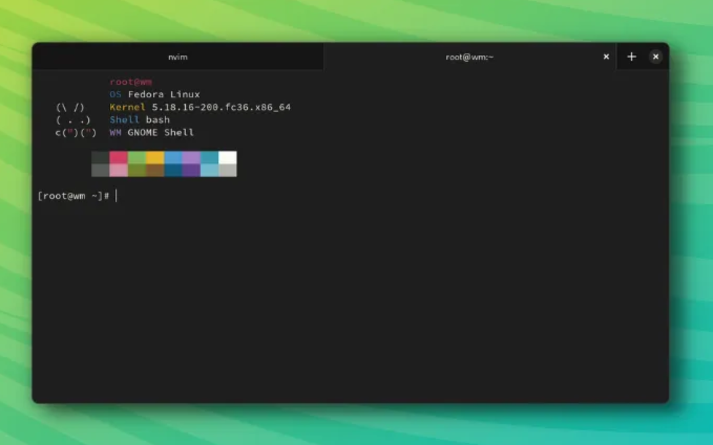
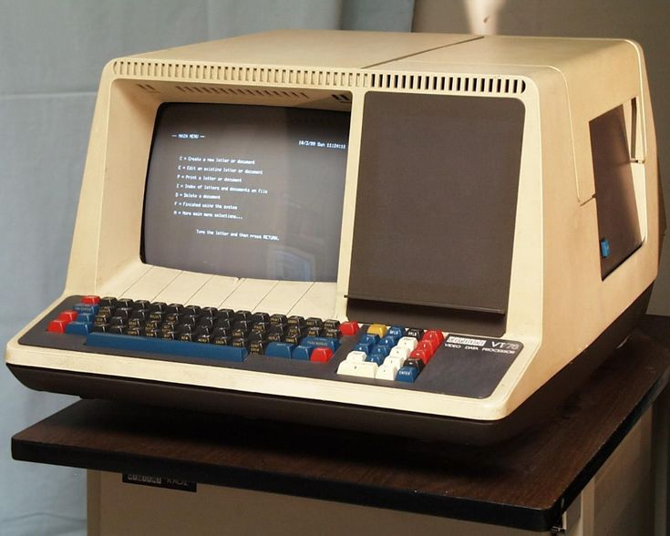
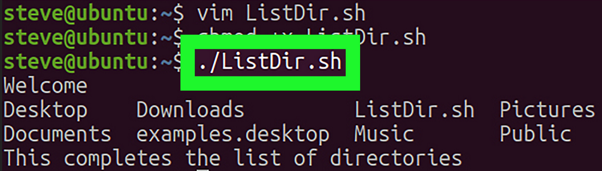
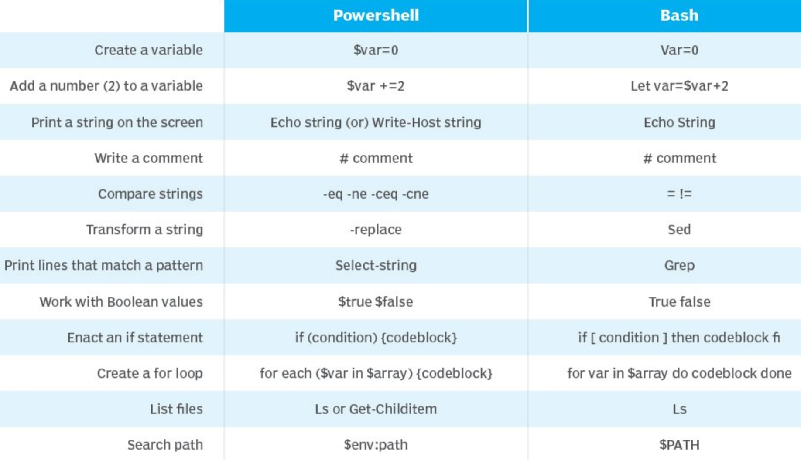

Bash commands
Navigatie
| Navigatie | Afkorting | Functie |
|---|---|---|
pwd |
Print working directory | De locatie waar we zitten |
ls |
List | Lijst met inhoud van de folder waarin we zitten |
ls -a |
List all | Lijst met hidden files en folders |
ls -l |
List in long format | Lijst met info |
ls -al |
List all in long format | Lijst met info & hidden files |
tree . tree folder/folder/ |
Lijst in boomstructuur | |
cd folder cd folder/folder/ |
Change directory | Naar een andere locatie gaan |
cd .. cd ../.. |
Change directory | Een locatie hoger gaan |
cd - |
Change directory | Naar de vorige locatie gaan |
cd |
Change directory | Naar de startlocatie gaan |
Bestanden en folders beheren
| Aanmaken | Afkoring | Functie |
|---|---|---|
touch |
Bestand aanmaken | |
mkdir |
Make directory | Folder aanmaken |
rm |
Remove | Bestand verwijderen |
rm -r |
Remove recursive | Folder verwijderen |
cp file1 file2 |
Copy | Bestanden kopiëren |
cp -r dir1 dir2 |
Copy recursive | Folder kopiëren |
mv file1 file2 |
Move | Bestanden verplaatsen/hernoemen |
mv -r dir1 dir2 |
Move recursive | Folder verplaatsen/hernoemen |
cat file |
Concatenate | Inhoud van een (tekst)file bekijken |
Coderen
| Coderen | Afkoring | Functie |
|---|---|---|
code bestand |
Bestand openen in VS Code | |
codium bestand |
Bestand openen in VS Codium | |
thonny bestand |
Bestand openen in de Raspberry Pi Code Editor | |
nano bestand |
Bestand openen in de Nano Terminal Code Editor | |
python bestand.py |
Python code uitvoeren |
Command line shortcuts
Ctrlc : Stop het command dat aan het runnen is/verwijder het command dat je aan het typen bent.
Ctrla : Ga naar het begin van de lijn.
Ctrle : Ga naar het einde van de lijn.
CtrlShiftc : Copy.
CtrlShiftv : Paste.
command 1 && command 2 && command 3: Commands chainen (na elkaar uitvoeren).
Terminologie
Terminal
Een programma waarin je tekstcommando’s kan typen.

Console
Soms gebruikt men het woord console als synoniem voor terminal, maar eigenlijk verwijst een console naar de vroegere fysieke computer met enkel een toetsenbord en een tekstscherm, zonder grafische interface.

Command line
De regel waar jij je commando’s typt.
Het is niet het venster, maar de input-lijn zelf.

Shell
De software die jouw commando interpreteert en uitvoert.
Dat is wat er draait in de terminal.
Bash
Bash is een shell-taal waarin je commmands & scripts kan schrijven.
Er zijn meerdere shell-talen zoals:
- PowerShell (op Windows)
- Zsh (op MacOS & Linux)
- Bash (op MacOS & Linux)
- …

Created: 21/10/2025